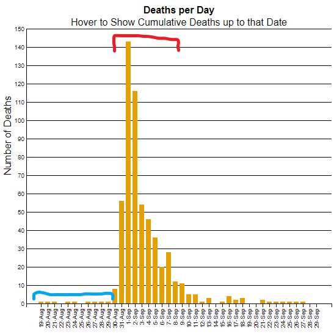

The Developer
 Richard Lemke is a graduate student in his potentially final semester in the Applied Data Science program. He has been a software developer for 5 years, and is hoping to become a computer science teacher once his wife is done with school. This is his first experience using the d3 library.
Richard Lemke is a graduate student in his potentially final semester in the Applied Data Science program. He has been a software developer for 5 years, and is hoping to become a computer science teacher once his wife is done with school. This is his first experience using the d3 library.
The Data
 This data is from John Snow's research of the Broad Street cholera outbreak. Specifically, we're using a map of the area overlayed with the location of 13 water pumps and the locations of deaths from cholera. Each death also notates the age and sex of the victim. Additionally, we form a bar graph using data telling the number of deaths on a given day.
This data is from John Snow's research of the Broad Street cholera outbreak. Specifically, we're using a map of the area overlayed with the location of 13 water pumps and the locations of deaths from cholera. Each death also notates the age and sex of the victim. Additionally, we form a bar graph using data telling the number of deaths on a given day.
The Design
For the map, a basic design was prefered in order to avoid unnecessary noise. The background is white and the roads black, and all data marks are in color to make them easy to distinguish. The marks are simple circles, with the only channel utilized within a category being position. The pump marks are larger than the death marks because there are fewer of them, they don't overlap, and they are significant in deriving meaning from the data. The pumps are blue, since blue is commonly associated with water. The deaths are yellow since yellow attracts the eye and that helps compensate for the small size of the marks (which is more important since these marks are dynamic.)
I chose a bar graph to represent the deaths/day data. I largely chose this because I viewed the data as categorical (simply dividing up the deaths based on which date they occurred.) My second choice was a line graph, but I didn't follow that path because that almost implies a relation between deaths on one day and deaths on another. A line graph might have been more suitable for a graph showing cumulative deaths up to a date, or the change in the number of deaths (i.e. how many more/less people died today than yesterday.) Originally, the bar graph did not have horizontal lines in the background. That wasn't very easy to read, especially since the taller bars are farther away from the y axis. The background lines make it much easier to estimate values at a glance. The maximum value on the y axis was originally just the maximum value in the dataset. This was strange and made it appear that data was extending past the intended area of the graph. Now the max value is rounded up to the nearest multiple of ten from the maximum dataset value.
The colors used are from the Wong colorblind-safe palette. They are distinct in all forms of colorblindness. Using a fixed palette also makes it easy to visually link data. For example, the columns in the bar graph are the same color as the dot indicating the location of a death, making it more obvious that the two are related.
The Deductions

I was hoping to derive information about the mortality rate of the disease, but was unable to do so with only information about deaths but not infections (including those that did not result in death.) Instead, I focused on how quickly the number of deaths rose. Given how quickly COVID is spreading, it seemed timely to consider how contagious the observed disease is. I assumed cholera was probably highly contagious, otherwise it would not have caused much alarm. The adjacent image supports this hypothesis. The section bracketed in blue shows very few cases for more than a week. Then abruptly, there is a sharp increase in the number of deaths as highlighted by the red bracket. This suggests that it does not take very many cases to trigger an outbreak. Modern science further confirms this hypothesis, since we now know the contagion spreads readily through contaminated water.
Return to Main Page